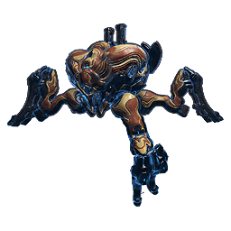

Se equipando para fazer Orb-Mothers: Guia de iniciante
Tudo que você precisa saber para começar a caçar Beneficiária e Exploiter Orb no Vallis Das Orbes.

Fortuna (Vallis Das Orbes)
…
--:--
Guias
Este guia está dividido em quatro partes:
Como funciona?
As mecânicas do Beneficiária (fases de pernas e escudo) e do Exploiter Orb (mecânica de coolant).
Equipamentos
Warframe, armas, Operador e Amp recomendados, com notas de loadout específicas para cada boss.
Modo Iniciante
Uma configuração simplificada para começar a caçar o Beneficiária.
Demonstrações
Vídeos de caçadas reais contra o Beneficiária e o Exploiter Orb.